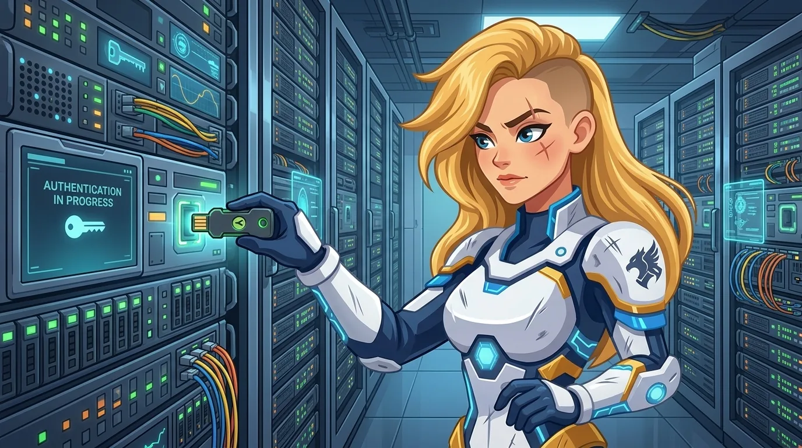

Souveraineté
Votre code n'a aucun autre endroit
La souveraineté n'est pas une promesse dans un contrat. C'est une architecture sans dépendance étrangère où se replier. Cette page montre la nôtre, couche par couche.

Couche par couche
| Couche | Qui la contrôle | Où elle tourne |
|---|---|---|
| Poids du modèle | Licence ouverte, téléchargeable par vous. Personne ne peut les retirer. | portable |
| Inférence | bespinian, une société suisse, sur ses propres GPU - aucune capacité hyperscaler. | Suisse |
| Votre code | En mémoire pour la durée de la session. Ce qui persiste est chiffré avec vos clés. | votre tenant |
| Journaux et sauvegardes | Les journaux d'audit sont à vous. Géoredondants, mais jamais une réplique à l'étranger. | CH uniquement |
| Accès du support | Uniquement du personnel résidant en Suisse, accès d'urgence avec votre accord. | Berne |
Trois questions qui tranchent
Posez-les à chaque fournisseur de votre liste. À nous aussi.
Pouvez-vous continuer si le fournisseur disparaît demain ?
Avec Keera, oui : les poids sont sous Apache-2.0, le runtime arrive en chart Helm, et l'accord d'entiercement vous remet les deux.
Quelle autorité étrangère peut exiger la remise des données ?
Aucune. bespinian n'a ni maison mère, ni filiale, ni sous-traitant aux États-Unis - le CLOUD Act n'a pas de destinataire.
D'où vient la capacité en pointe ?
De GPU suisses réservés. Les requêtes attendent en file au lieu de se replier à l'étranger. C'est inscrit dans le SLA.
Construite en open source
Keera n'est pas une boîte noire. Votre équipe sécurité peut lire ce qui tourne sur ses machines au lieu de faire confiance à un changelog.
- Qwen-Coder et Apertus - modèles à poids ouverts, Apache-2.0
- vLLM - service d'inférence à haut débit
- llm-d sur Kubernetes - ordonnancement et routage, livrés en charts Helm
Plus un SBOM signé par version et un runbook éprouvé qui migre un tenant dans votre propre cluster en moins de deux semaines.
Envoyez-nous votre questionnaire de risque
Nous y répondons entièrement avant le premier atelier. ISO 27001, correspondance nLPD, documentation FINMA et dossiers relatifs au règlement européen sur l'IA sur demande.